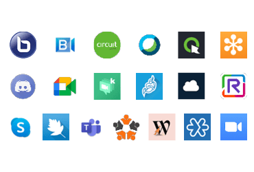
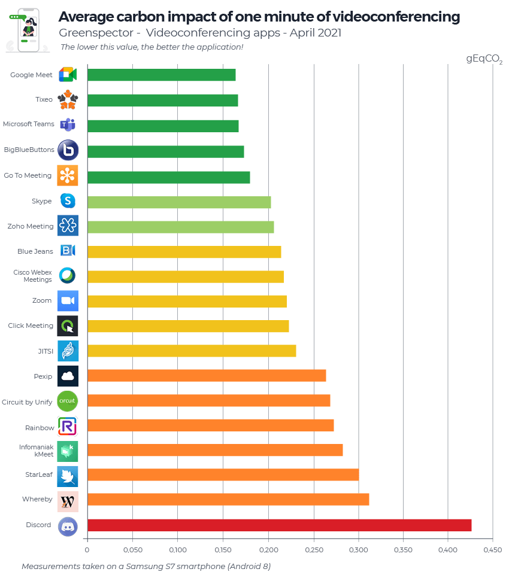
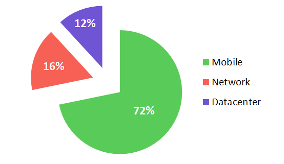
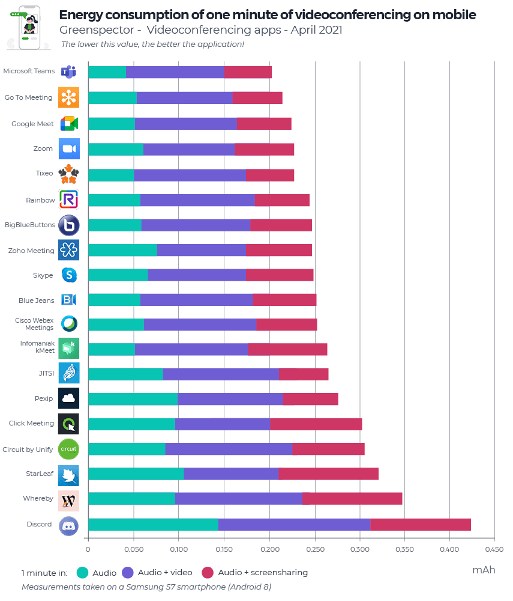
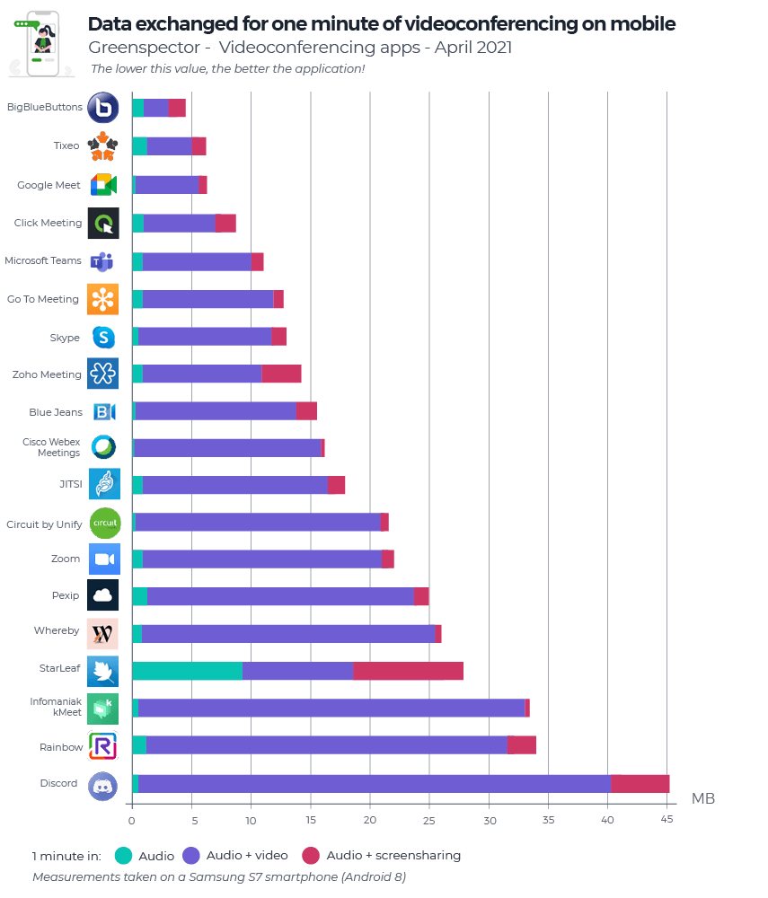

We invite you to consult the 2022 edition. Read the article.
For this new 2021 edition of our ranking, we have completed our 2020 study with new solutions and even extended it to web solutions. The objective of these measures is to see how the solutions stand in terms of environmental impact (Carbon) with each other on common user scenarios but also to provide benchmarks on our uses of videoconferencing.
So this time we compared 19 mobile applications: Big Blue Button, BlueJeans, Circuit by Unify, Cisco Webex Meetings, ClickMeeting, Go To Meeting, Discord, Google Meet, Infomaniak kMeet, Jitsi, Pexip, Rainbow, Skype, StarLeaf, Microsoft Teams, Tixeo, WhereBy, Zoho Meeting et Zoom.

For each of its applications, measured on an S7 smartphone (Android 8), the following three scenarios were carried out through our Greenspector Test Runner, allowing manual tests to be carried out over a period of 1 minute in one-to-one:
- Audio conference only
- Audio + video conference (camera activated on each side)
- Audio and screen sharing conference
Learn more about the methodology.
Projected carbon impact ranking of videoconferencing applications (gEqCO2)

Here are the impact averages for the three scenarios:
| User scenario / Year | 1 mn of audio conference | 1 min of audio + video conference | 1 min of audio + screen sharing conference |
|---|---|---|---|
| 2021 | 0.155 gEqCO2 | 0.403 gEqCO2 | 0.163 gEqCO2 |
| 1,38 meters made in a light vehicle | 3,6 meters made in a light vehicle | 1,46 meters made in a light vehicle | |
| 2020 | 0.102 gEqCO2 | 0.289 gEqCO2 | 0.121 gEqCO2 |
On average, one minute of audio-video conferencing impacts 61% less (or 2.6 times less) than with activated cameras and 5% less than when sharing a screen. According to our recent study on the impact of streaming a MyCanal video, on average, one hour of video streaming corresponds to an impact of 14g eqCO2. Or 0.233g eqCO2 per minute, or 1.7 less impacting than a minute of video conferencing in audio and camera but 1.5 times more than a minute of video conferencing in audio-only.
The Top 3 for one minute of videoconferencing on average: Google Meet (0.164 gEqCO2), Tixeo (0.166 gEqCO2), and Microsoft Teams (0.167 gEqCO2). Google Meet, first in this ranking on the carbon impact side, has an impact 2.5 times less than, Discord, the last app in this ranking. The average of this ranking is 0.237 gEqCO2, only 7 solutions are above.
The main part of the Carbon impacts is situated on the user device part (72%), followed by the Network part (16%) and finally the Server part (12%).

Here are the three least impacting applications in terms of Carbon depending on the scenario:
| Audio (Top 3) | Audio + camera (Top 3) | Audio + screensharing (Top 3) |
|---|---|---|
| Microsoft Teams | Big Blue Buttons (via Chrome) | Microsoft Teams |
| Google Meet | Click Meeting | Go To Meeting |
| Infomaniak Meet | Google Meet | Tixeo |
Energy Consumption of Video Conferencing Applications (mAh)

Here are the energy consumption averages for the three scenarios:
| User scenario/year | 1 mn of audio conference | 1 mn of audio + video conference | 1 mn of audio + screen-sharing conference |
|---|---|---|---|
| 2021 | 9.84 mAh | 16.26 mAh | 9.98 mAh |
| 2020 | 6.6 mAh | 14.24 mAh | 7.50 mAh |
On average, one minute of audio-video conferencing consumes 39% less (or 1.6 times less) energy than with activated cameras and 1.5% less than when sharing a screen.
The Top 3 (all scenarios combined) in energy consumption: Microsoft Teams (27.27 mAh), Go To Meeting (28.79 mAh), and Google Meet (30.11 mAh). Microsoft Teams first in this ranking in terms of energy consumption consumes 2 times less than the last in this ranking: Discord.
Here are the three most energy efficient applications depending on the scenario:
| Audio (Top 3) | Audio + camera (Top 3) | Audio + screen-sharing (Top 3) |
|---|---|---|
| Microsoft Teams | Zoho Meeting | Microsoft Teams |
| Tixeo | Zoom | Tixeo |
| Infomaniak kMeet | StarLeaf | Go To Meeting |
Exchanged data from videoconferencing applications (MB)

Here are the averages of the data exchanged for the three scenarios:
| User scenario/year | 1mn of audio conference | 1 mn of audio + video conference | 1 mn of audio + screen-sharing conference |
|---|---|---|---|
| 2021 | 1.15 Mo | 16.01 Mo | 1.87 Mo |
| 2020 | 0.806 Mo | 8.44 Mo | 1.43 Mo |
It is on the consumption of data that the gaps are widening between tools and uses.
On average, one minute of audio conferencing consumes 92% less (or 14 times less) data exchanged than with activated cameras and 38% less than when sharing a screen.
The Top 3 (all scenarios combined) in energy consumption: Big Blue Buttons (4.49 MB), Tixeo (6.21 MB), and Google Meet (6.30 MB). Big Blue Buttons (via Chrome) first in this ranking for exchanged data consumes 10 times less than the last in this ranking: Discord.
Here are the three applications that consume the least amount of data according to the scenario:
| Audio (Top 3) | Audio + camera (Top 3) | Audio + screensharing (Top 3) |
|---|---|---|
| Cisco Webex Meetings | Big Blue Buttons | Cisco Webex Meetings |
| Blue Jeans | Tixeo | Infomaniak kMeet |
| Google Meet | Google Meet | Google Meet |
And for our daily use of videoconferencing:
Just like our first study, we advise you during your online conferences to:
Favour audio only during your meetings: the video stream (camera) will tend to consume a lot more. A mobile session is on average 2.6 times more impactful for the environment in terms of carbon impact when the video is added to the audio. Adding screen sharing is not penalizing if it is useful.
Optimize the settings (when possible): adopt the dark theme, activate the data or energy-saving settings (in the case of LED, AMOLED type screens).
Prefer videoconferencing over travelling by car!
- Comparison for 2 people who talk to each other in a 3-hour session in audio and active cameras (0.403 gEqCO2 per minute) while one of the two has made 20 km (112 gEqCO2 / km in France) round trip for a face to face.
- By videoconference: 180 * 0.403 * 2 = 145 gEqCO2
- By car: 112 * 20 = 2.4 kg EqCO2 or approximately 16x more impact.
Measured versions: Big Blue Button via Chrome (87.0.4280.101), BlueJeans (45.0.2516), Circuit by Unify (1.2.5102), Cisco Webex Meetings (41.2.1), ClickMeeting (4.4.6), Go To Meeting (4.6.0.7), Discord (62.5), Google Meet (2021.01.24.355466926), Infomaniak kMeet (2.2), Jitsi (20.6.2), Pexip (3.4.6), Rainbow (1.84.1), Skype (8.68.0.97), StarLeaf (4.4.29), Microsoft Teams (1416.1.0.0.2021020402), Tixeo (16.0.1.2), WhereBy (2.3.0), Zoho Meeting (2.1.4) et Zoom (5.5.2.1328).
For each of its applications, measured on an S7 smartphone (Android 8), the user scenarios were carried out through our Greenspector Test Runner, allowing manual tests to be carried out.
Once the application is downloaded and installed, we run our measurements on the basic and original settings of the application. No modification is made (even if certain options make it possible to reduce the consumption of energy or resources: data saving mode, dark theme, etc. However, we encourage you to check the settings of your favourite application to optimize it. impact.
Each measurement is the average of 5 homogeneous measurements (with a low standard deviation). The consumption measured on the given smartphone according to a Wi-Fi type network can be different on a laptop PC with a wired network for example. For each of the iterations, the cache is first emptied.
To assess the French impacts of infrastructures (datacenter, network) in the carbon projection calculations, we relied on a Greenspector methodology based on real data measured from the volume of data exchanged. This evaluation methodology takes into account the consumption of resources and energy in use for the requested equipment. As this is a very macroscopic approach, it is subject to uncertainty and could be fine-tuned to adapt to a given context, to a given tool. For the Carbon projection, we assumed a 50% projection via a Wi-Fi network and 50% via a mobile network.
To assess the impacts of the mobile in the carbon projection calculations, we measure on a real device, the energy consumption of the user scenario and in order to integrate the material impact share, we rely on the wear rate theory generated by the user scenario on the battery, the first wearing part of a smartphone. 500 full charge and discharge cycles, therefore, cause a change of smartphone in our model. This methodology and method of calculation have been validated by the consulting firm specializing in eco-design, Evea.
In a process of continuous improvement, we are vigilant in constantly improving the consistency of our measurements as well as our methodology for projecting CO2 impact data. Therefore, it is unfortunately not possible to compare a study published a year earlier with a recent study.